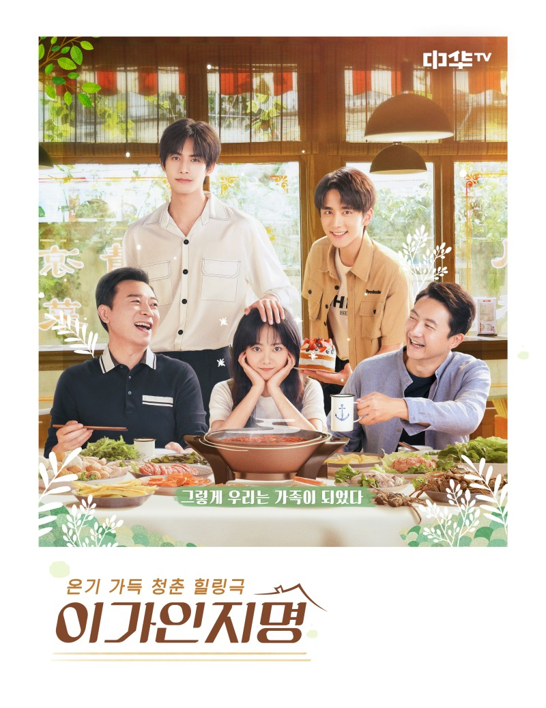

‘상견니’에 이은 또 하나의 웰메이드 드라마 ‘이가인지명’이 오는 6일 오후 8시, 중화TV에서 첫 방송을 앞두고 있어 중드 팬들의 관심을 한 몸에 받고 있다. 
‘이가인지명’은 피 한 방울 안 섞이고 성도 다른 세 사람이 각자 부모로부터 받은 상처를 간직한 채 서로에게 의지하며 함께 성장하는 이야기. 지난 여름, 중국 현지 방영 당시 리뷰 사이트 ‘더우반’ 평점 최고 8.6 기록, 단일 재생 건수 1.3억 뷰 돌파 등 폭발적인 호평을 받은 작품으로, 국내의 팬들 역시 국내 방영을 애타게 염원해온 작품이다.
특히 드라마 ‘누나의 첫사랑’과 영화 ‘나의 청춘은 너의 것’의 송위룡, 드라마 ‘최호적아문 2: 안녕, 우리들의 시간’ ‘빙당돈설리’의 장신청, 국내에서도 흥행한 드라마 ‘최호적아문’의 담송운까지, 중국 최고의 청춘스타들이 동반 캐스팅되어 기대를 모은다.